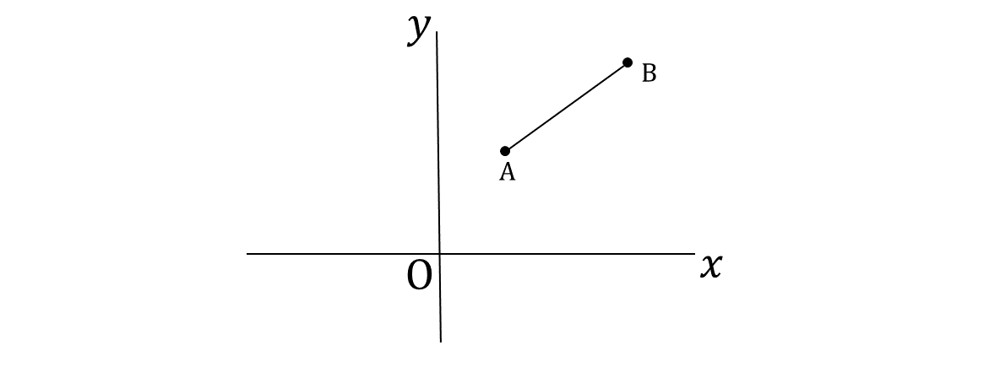
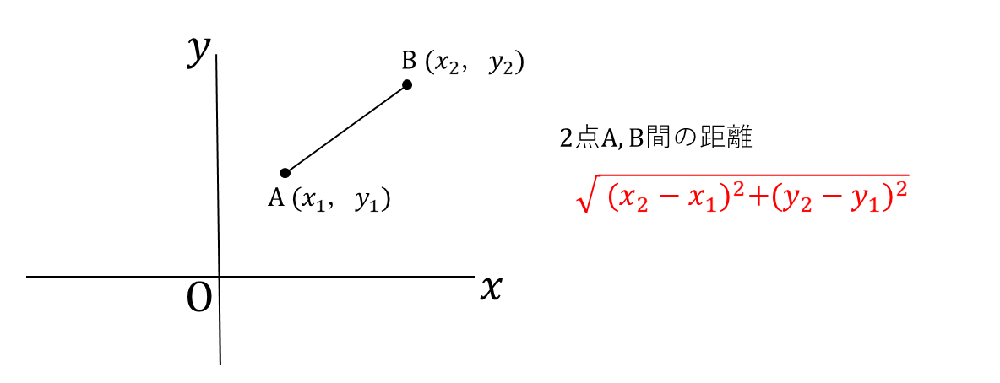
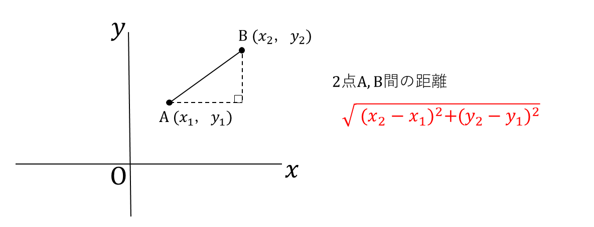

次の図のように、左右に伸びる直線をx軸とし、上下に伸びる直線をy軸として、点の位置を(x, y)で表す平面を座標平面といいます。
座標平面上に、２点A、Bがあるとき、線分ABの長さを２点間の距離と呼びます。
点A、Bの座標をそれぞれ点A(x₁, y₁)、点B(x₂, y₂)とおくとき、線分ABの長さ、２点間の距離には次のような公式が成り立ちます。
この公式は、三平方の定理がもとであることを意識しましょう。
線分ABを直角三角形の斜辺と見立てると、次のようになります。
直角三角形において、底辺(x₂-x₁)、高さ(y₂-y₁)なので、三平方の定理により、
AB² = (x₂-x₁)²+(y₂-y₁)²
が成り立ちます。
公式を文字として丸暗記するのではなく、直角三角形の斜辺をイメージすると立式しやすくなります。